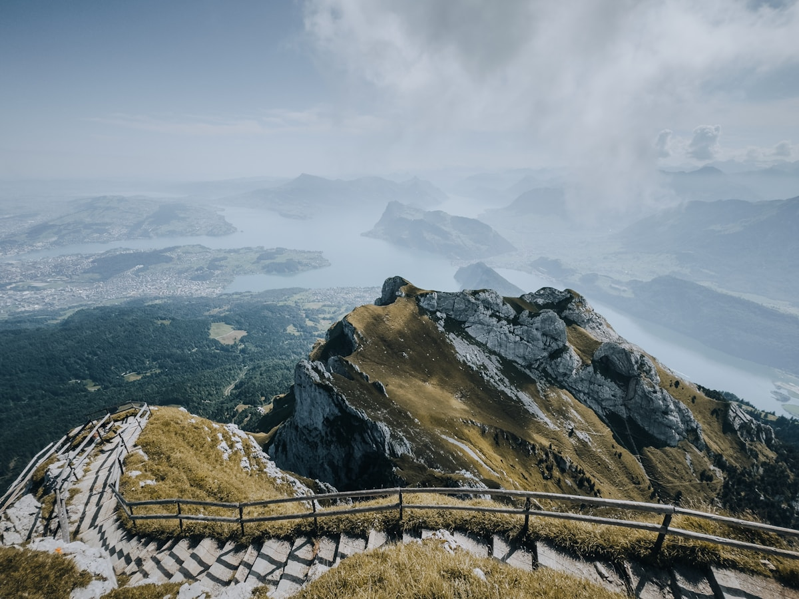

Complete 10-Day Switzerland Itinerary
Overview
This 10-day itinerary expands on the 7-day plan with additional destinations including Montreux and Geneva. Perfect for travelers who want a more comprehensive Swiss experience.
Day 1: Arrival in Zurich
Morning: Arrive at Zurich Airport. Train to city center. Check into hotel.
Afternoon: Explore Bahnhofstrasse, Lake Zurich, Niederdorf district.
Evening: Dinner at a traditional Swiss restaurant in Old Town.
Day 2: Zurich to Lucerne
Morning: Train to Lucerne (45 min). Visit Chapel Bridge and Lion Monument.
Afternoon: Lake Lucerne boat cruise. Walk the Museggmauer city wall.
Evening: Lakeside dinner. Overnight in Lucerne.
Day 3: Mount Pilatus Excursion
Morning: Golden Round Trip: boat to Alpnachstad, cogwheel train to Pilatus Kulm.
Afternoon: Panoramic views, cable car descent to Frakmunt and Kriens.
Evening: Free time in Lucerne. Overnight in Lucerne.

Day 4: Lucerne to Interlaken
Morning: Scenic train to Interlaken (2 hours). Check into hotel.
Afternoon: Hoheweg promenade. Optional paragliding.
Evening: Walk along Aare River. Overnight in Interlaken.
Day 5: Jungfraujoch Excursion
Morning: Cogwheel train to Jungfraujoch - Top of Europe (3,454m).
Afternoon: Ice Palace, Sphinx Observatory, Aletsch Glacier viewpoint.
Evening: Return to Interlaken. Overnight stay.
Day 6: Grindelwald & Lauterbrunnen
Morning: Train to Grindelwald. Gondola to First.
Afternoon: Lauterbrunnen Valley - Staubbach Falls and Trummelbach Falls.
Evening: Return to Interlaken. Overnight stay.
Day 7: Interlaken to Zermatt
Morning: Scenic train to Zermatt (2.5 hours). Check into hotel.
Afternoon: Explore car-free Zermatt. Visit Matterhorn Museum.
Evening: Gornergrat Railway for sunset views. Overnight in Zermatt.
Day 8: Zermatt to Montreux
Morning: Morning at leisure in Zermatt. Souvenir shopping.
Afternoon: Train to Montreux (2.5 hours via Visp and Lausanne).
Evening: Walk along Montreux lakeside promenade. See Chillon Castle.
Day 9: Montreux & Geneva
Morning: Visit Chillon Castle. Explore Montreux Old Town.
Afternoon: Train to Geneva (1 hour). Visit Jet d'Eau fountain and UN office.
Evening: Explore Geneva's lakeside. Dinner in Carouge district.
Day 10: Geneva Departure
Morning: Last-minute shopping on Rue du Rhone. Walk along Lake Geneva.
Afternoon: Transfer to Geneva Airport for departure flight.
Estimated total: CHF 2,500-3,500 (₹2,37,500-3,32,500) per person excluding flights.